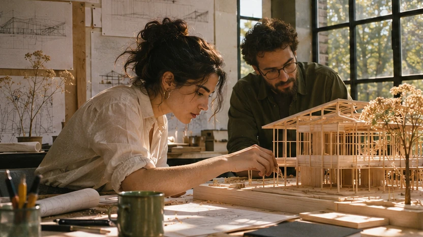
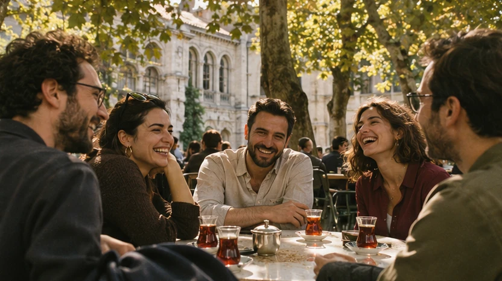
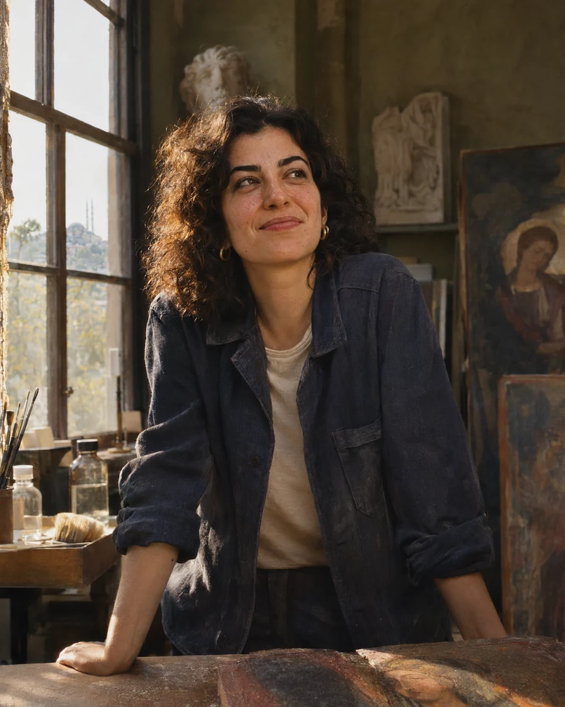

Chapter 01 The Beginning
Every story begins somewhere.
For us, it began with shared classrooms, familiar corridors, and the experiences that shaped who we became.
İstanbul Üniversitesi · Alumni Network
From the moments that shaped us to the futures we build, our connections continue beyond graduation.
The alumni journey
Chapter 01 The Beginning
For us, it began with shared classrooms, familiar corridors, and the experiences that shaped who we became.
Chapter 02 The Milestone
Graduation marks an achievement, but it also opens the door to everything that comes next.

Chapter 03 The Journey Forward
Different careers, different cities, different ambitions — connected by a shared beginning.

Chapter 04 The Connection
Wherever life takes us, the community we built remains part of who we are.
Our community
Every graduate carries a unique journey. Together, those journeys form a community that continues to inspire, connect, and create opportunities.
Explore alumni profiles
A community that moves forward
ATS İÜ connects İstanbul University graduates through professional opportunities, university announcements, and a shared digital community.
Find the people at the heart of the university community.
02Explore open positions and take the next step in your career.
03Keep up with news and updates from the university.
04Follow job applications and keep track of their status.
Your next chapter
Your İstanbul University journey continues through the people, opportunities, and stories that connect us.